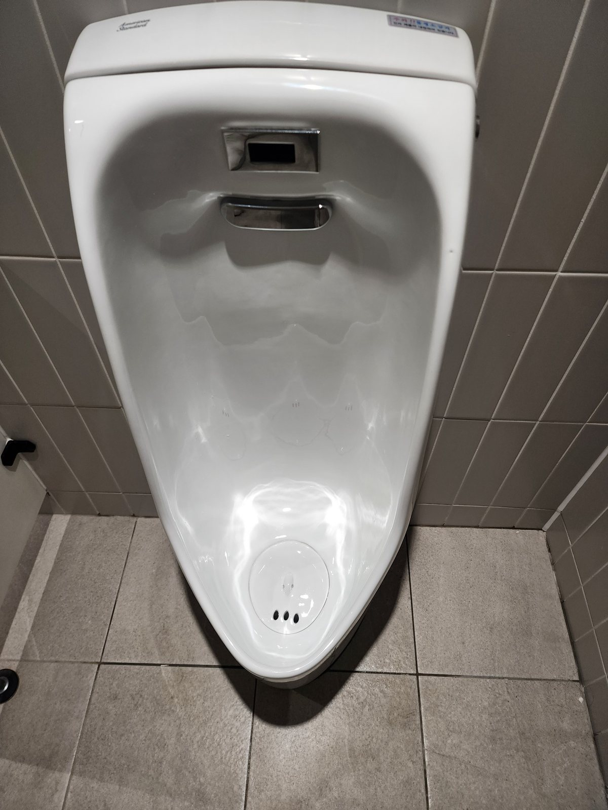
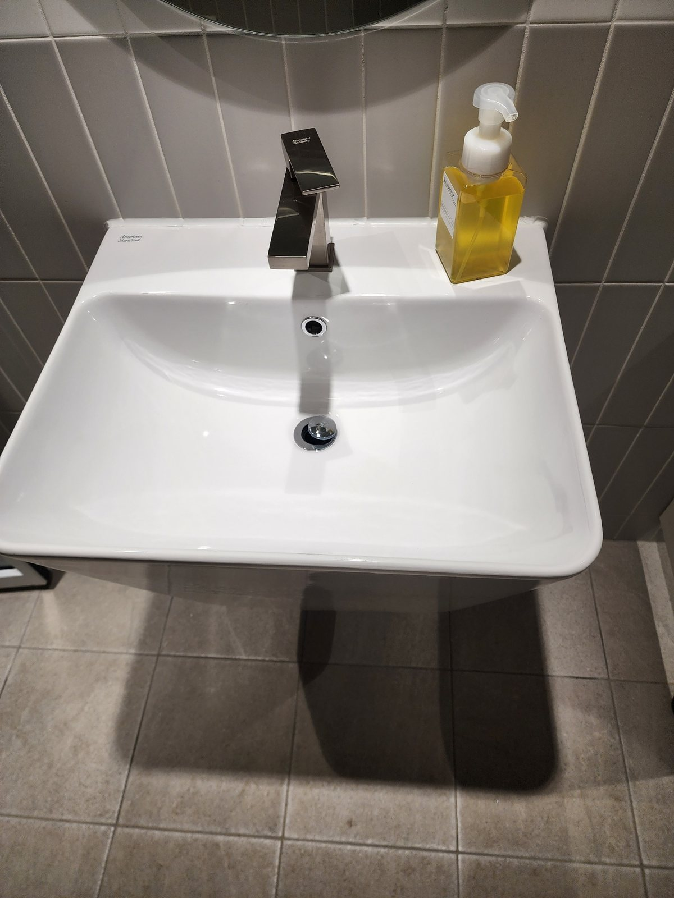
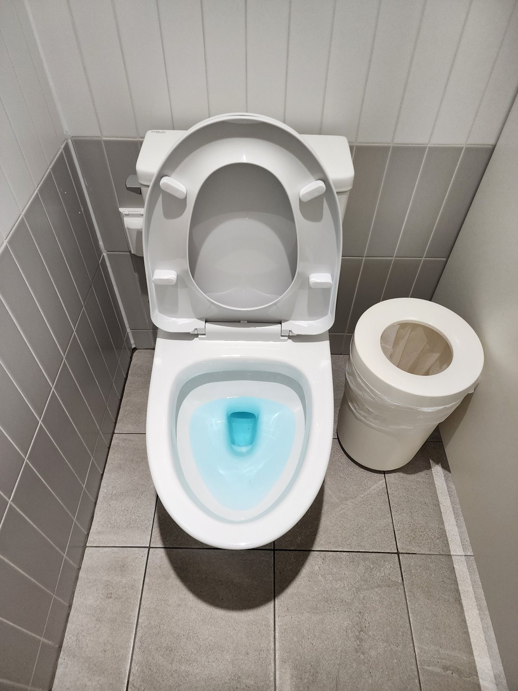
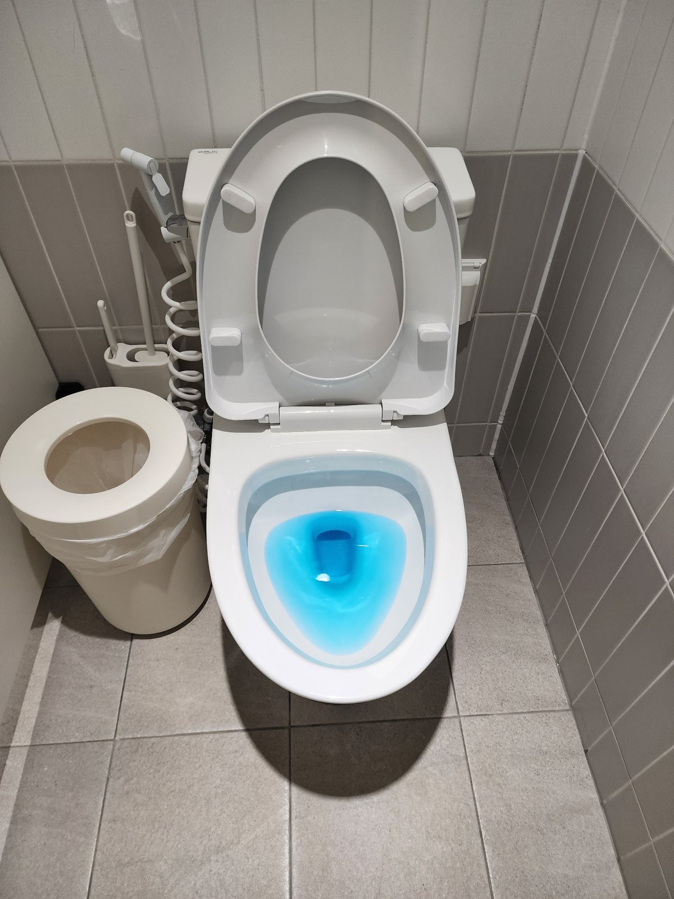
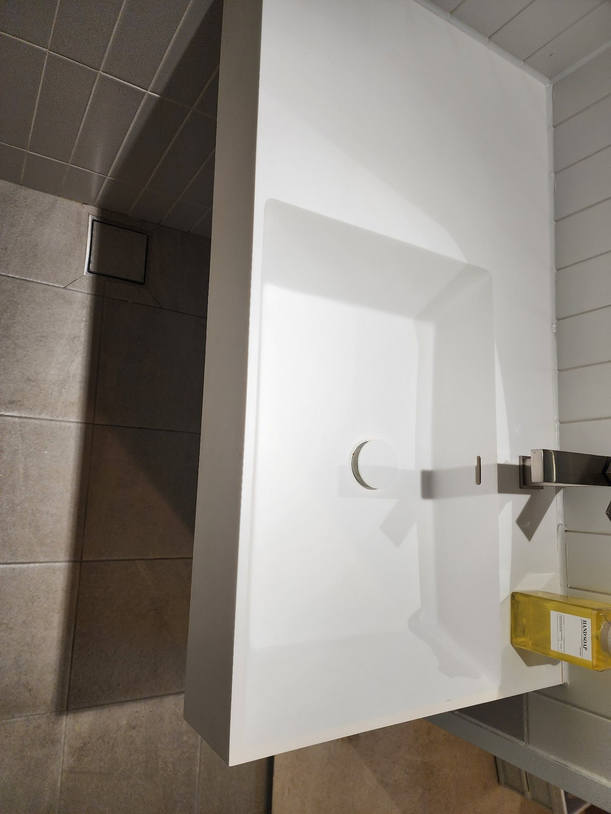
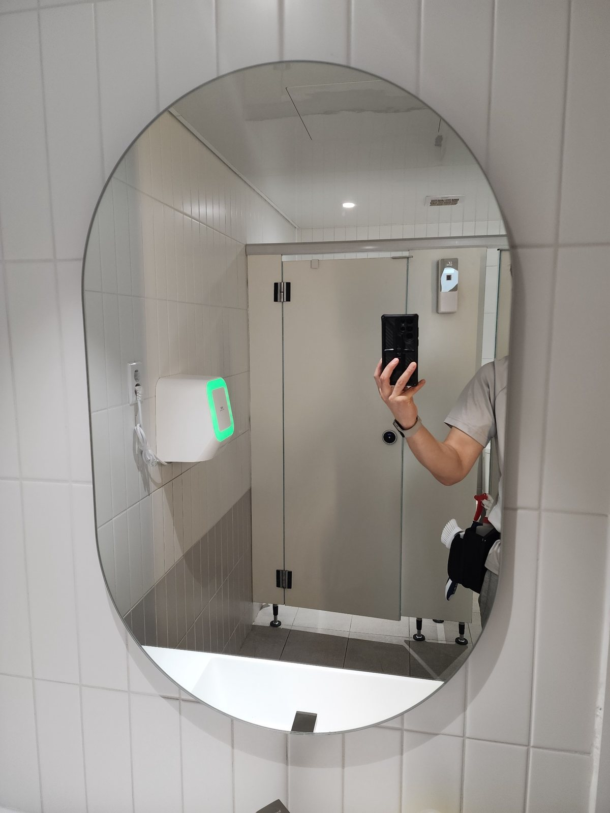
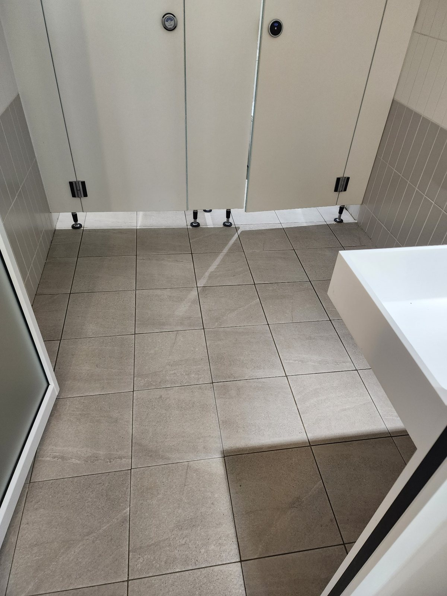
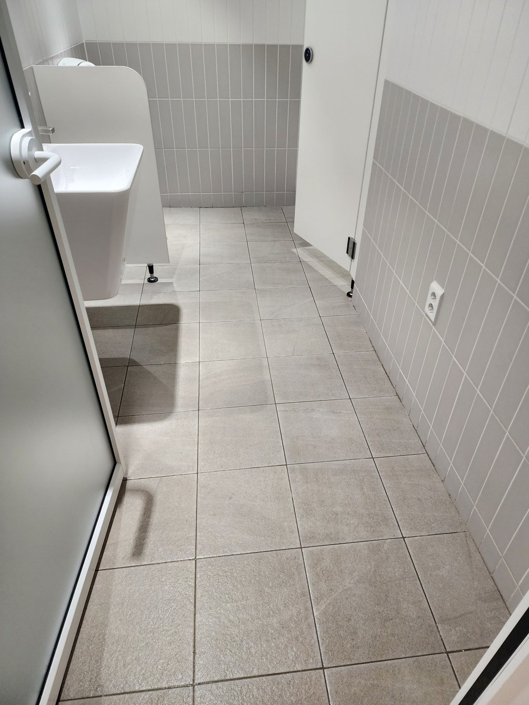
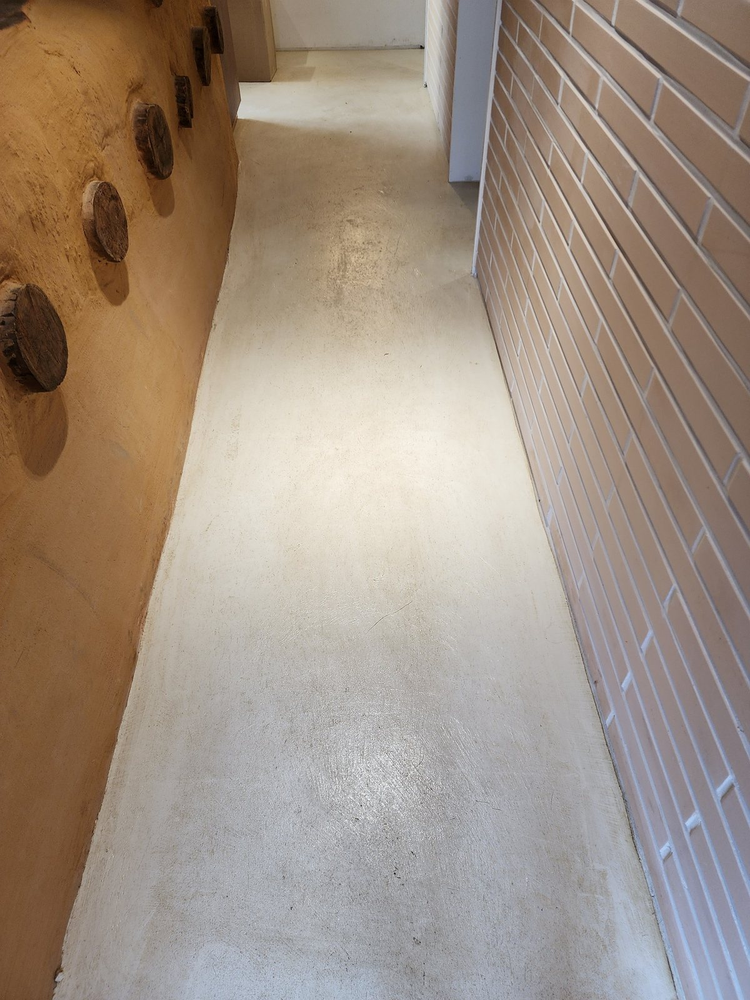

김해 사업장 화장실 정기청소 | 변기·세면대·바닥 관리
김해 공장·사무실·학원 등 사업장 화장실은 직원과 방문객이 반복해서 이용하기 때문에 위생도기뿐 아니라 바닥, 세면대, 거울, 칸막이 주변까지 꾸준한 관리가 필요합니다. 이번 작업사례는 화장실 내부와 연결 공용부를 기준으로 자주 오염되는 구역을 세분화해 관리한 현장입니다.
화장실 정기청소는 변기 개수만 보는 것이 아니라 이용 인원, 이용 빈도, 바닥 물기, 냄새 발생 여부, 세면대와 거울 상태, 공용부 연결 동선을 함께 확인해 관리 횟수와 작업 범위를 정합니다.
현장 규모, 이용 인원, 운영시간, 오염 정도, 관리 범위를 확인한 뒤 무료 방문견적으로 안내합니다.
주촌·대동·상동·진례·한림·생림 등 공장과 기업체가 밀집한 지역을 중심으로 사무실·공장 화장실 정기청소를 상담합니다. 직원 수, 방문객 수, 화장실 이용량, 변기·소변기·세면대 수와 공용부 범위를 함께 확인합니다.
현장 사진으로 보는 관리 범위
아래 사진은 실제 공간을 기준으로 어떤 부분을 확인하고 관리하는지 설명한 내용입니다. 사진마다 바닥, 가구 주변, 위생도기, 공용 동선 등 관리 포인트를 구체적으로 정리했습니다.

화장실 진입부와 바닥 전체 확인
화장실 정기청소는 변기나 세면대만 보는 것이 아니라 출입구에서 칸막이 아래, 배수구 주변까지 전체 바닥 상태를 먼저 확인합니다. 물기와 먼지가 함께 남기 쉬운 구간은 작업 순서를 나눠 관리합니다.

소변기 내부와 주변 오염 관리
소변기는 사용 빈도가 높아 내부뿐 아니라 하단 바닥과 벽면 주변에도 오염이 남기 쉽습니다. 도기 표면의 얼룩과 사용 흔적을 정리하고, 주변 바닥까지 함께 관리해 냄새 원인이 남지 않도록 합니다.

세면대와 수전 정리
세면대는 물때와 비누 잔여물이 빠르게 생기는 곳입니다. 세면볼 내부, 수전 주변, 배수구를 함께 관리하고 사용 후 물자국이 남지 않도록 표면을 정리합니다.

양변기 내부와 시트 주변 관리
양변기는 내부 도기뿐 아니라 시트 연결부와 바깥쪽까지 확인해야 합니다. 사용 흔적이 남기 쉬운 부분을 세분화해 닦고 바닥 접점 주변까지 함께 관리합니다.

칸막이 내부 바닥까지 정리
화장실 칸 내부는 공간이 좁아 모서리와 변기 뒤쪽이 빠지기 쉽습니다. 바닥 타일과 줄눈, 칸막이 하부를 확인하면서 사람이 자주 밟는 중앙부와 가장자리를 함께 정리합니다.

세면대 주변 마감 상태 확인
세면대 청소 후에는 도기 표면의 물자국과 주변 바닥 상태를 다시 확인합니다. 비누 용기나 비품이 놓이는 자리까지 정돈하면 전체 공간이 더 깔끔하게 보입니다.

거울과 손이 닿는 부분 관리
거울은 물튐과 손자국이 쉽게 보이는 곳이라 마무리 품질에 영향을 줍니다. 거울 표면과 주변 프레임, 자주 손이 닿는 구역을 함께 정리해 청결한 인상을 유지합니다.

화장실 바닥과 배수구 주변 마무리
마지막으로 바닥 전체와 배수구 주변의 잔여 물기와 오염을 확인합니다. 타일 사이 줄눈과 벽면 가장자리까지 살펴 정기관리 후 다시 빠르게 오염되는 부분을 줄입니다.

공용부 연결 동선까지 함께 관리
화장실만 깨끗해도 바깥 복도에 먼지가 많으면 다시 유입되기 쉽습니다. 필요하면 화장실과 연결된 복도·공용부 바닥까지 함께 관리해 청결 상태를 안정적으로 유지할 수 있습니다.
김해 정기청소 무료 방문견적
학원, 사무실, 공장, 상가, 화장실 등 사업장 유형과 이용량에 맞춰 관리 범위와 주기를 상담합니다. 정기청소는 현장 상황에 따라 주 1회부터 주 6회까지 상담 가능합니다.